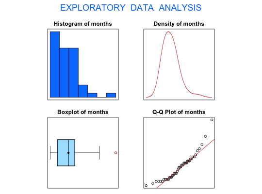

Data for Exercise 5.13
A data frame with 45 observations on the following 5 variables.
alameda, ca
allegheny, pa bergen, nj bexar, tx contra costa,
ca cook, il cuyahoga, oh dade, fl dallas, tx
dupage, il essex, ma essex, nj fairfax, va
fairfield, ct franklin, oh fresno, ca fulton, ga
harris, tx hartford, ct hennepin, mn honolulu,
hi jefferson, ky king, wa los angeles, ca
maricopa, az marion, in middlesex, ma middlesex,
nj milwaukee, wi new york, ny norfolk, ma
oakland, mi orange, ca orange, fl palm beach, fl
philadelphia, pa pima, az san bernadino, ca san
francisco, ca santa clara, ca st. louis, mo suffolk,
ma ventura, ca wayne, mi worchester, maKitchens, L. J. (2003) Basic Statistics and Data Analysis. Duxbury
str(Tort)#> 'data.frame': 45 obs. of 5 variables: #> $ county : Factor w/ 45 levels "alameda, ca",..: 25 37 1 5 16 24 33 38 39 40 ... #> $ months : int 11 17 22 15 42 12 21 30 21 20 ... #> $ populat: int 2209567 690202 1307572 840585 705613 3485398 2484789 1534343 728921 1528527 ... #> $ torts : int 9914 3346 3258 2469 2364 21954 18297 7583 3467 5148 ... #> $ rate : int 449 485 249 294 335 630 736 494 476 337 ... #>#> [1] "months" #>#> Size (n) Missing Minimum 1st Qu Mean Median TrMean 3rd Qu #> 45.000 0.000 10.000 13.500 18.933 19.000 18.415 22.000 #> Max. Stdev. Var. SE Mean I.Q.R. Range Kurtosis Skewness #> 42.000 6.489 42.109 0.967 8.500 32.000 1.919 1.210 #> SW p-val #> 0.001 #>detach(Tort)